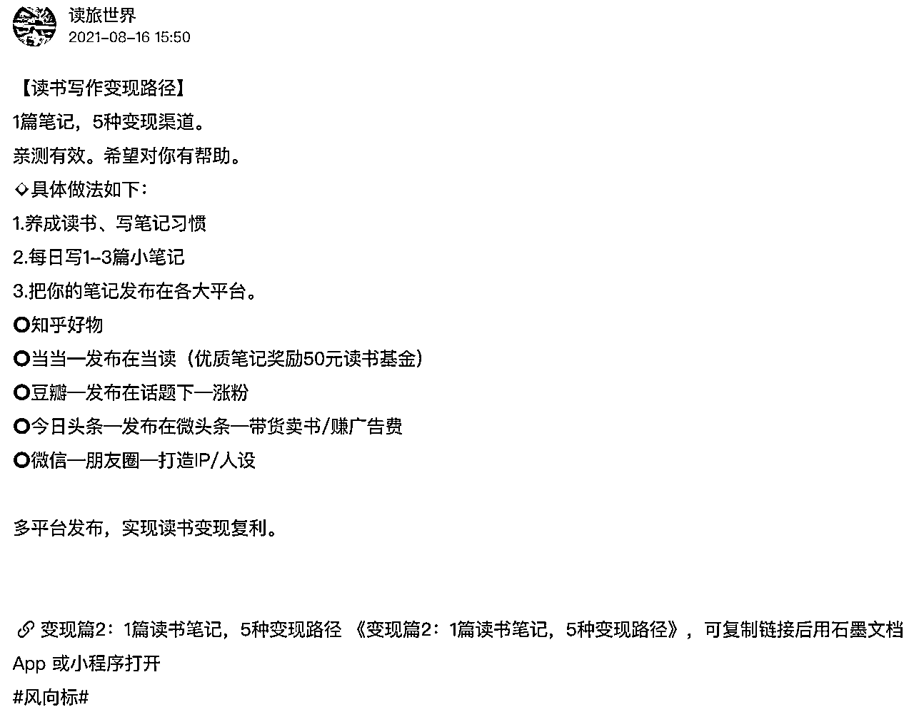
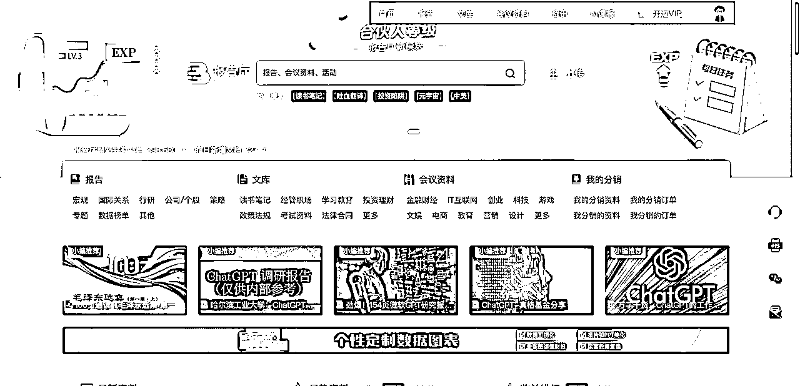
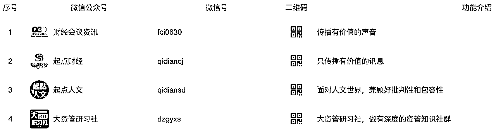

【平均每本书收益600+，1年变现3W+，成本0投入，读书笔记变现全流程复盘-适合小白上手的项目】
来源：https://kqubish8iq0.feishu.cn/docx/R7Cld4FZmoLMAmxzoEvcbRakn5b
大家好，我是龙珠圈友飞掌柜，见贴欢喜，相信大家都读过很多书，不知道是否有和我一样的经历，读完一本书，没过多久就忘了，很多书无法和实际工作或学习结合，或者没有变现。美其名曰“丰富了内在，开拓了眼界”，但收获多少，真正能用到多少，其实只有你自己知道。
你有多久没完整读过一本书了？每次总因为各种原因取消or打乱！
读过书是否很快忘记？看似丰富内在，其实没有在实际中运用！
你知道读书变现的途径和方法吗？需要找到靠谱的人帮助你！
今天复盘的是【读书笔记变现实操项目】，平均每本书收益600+，1年变现3W+，成本0投入，非常适合小白上手，全文阅读约8分钟。事先声明两点：
- 该项目适合对读书笔记变现感兴趣的小白，如果你是大佬，可以直接点击【收益情况、商业模式、实操步骤、笔记优化、项目思考】看精华总结即可；
- 该项目针对小白培训视角写的，因此介绍有平台功能部分，不是为了打广告哈。
同时，这里要提到本文的灵感来源，一方面是想对自己之前【读书笔记变现实操项目】进行总结，一方面来源于圈友@读旅世界 的风向标启发，他总结了5条读书笔记变现的风向标，附上链接：https://wx.zsxq.com/dweb2/index/topic_detail/185212841122122，在此感谢。他的5条分别是：

而我这一篇，不属于5条中的任意一条，相当于对他的途径进行了补充，给大家多一个变现渠道～
全文目录如下：
一、项目来源
- 在2021年，我运营读书会公众号，同时发布了“3分钟带你读懂一本书”短视频到视频号和抖音，平台的编辑通过这三个渠道找到我，问我能否作为读书笔记变现达人，参与项目，我考察后决定加入，下面有平台和公司介绍，也就是考察细节。
- 读书是反人性的事情，现在的人要么懒、要么忙，很多人不愿意读书，没有时间读书，因此一本500-800页的书籍，可以通过阅读读书笔记方式快速获取精华内容，因此市场有需求。
- 我自己喜欢读书，认为读书必须有输入+输出，整理读书笔记的过程，也是复盘总结的过程，可以加入自身思考，对读过的书留下深刻印象，对抗艾宾浩斯曲线，因此决定做本项目。
二、收益情况
- 单份读书笔记价格大概是9.9以下，编辑会根据你的作品质量定价，比如我实操的笔记，最少有1.99元，最多是9.9元，单份笔记数量最多有近300份。
- 利用一年时间，我写过50多本读书笔记，有的书赚得多，有的书赚的少，平均每本收益600+元，1年变现3W多，以下是我部分读书笔记收入截图：
三、平台介绍
- 该平台是【报告厅】，网址：https://www.baogaoting.com/，一句话概括：提供各类学习研究资料的整合平台。
- 你可以通过这个平台学习，找到读书笔记、研究报告、会议文档等各种资料；也可以参与创作者支持计划，当成副业渠道，商业化变现，报告厅面向创作者推出三项支持计划【读书笔记计划】【政策图解计划】【文献翻译计划】，每个都能赚钱。
- 【读书笔记计划】创作者负责输出读书笔记成果PPT或PDF，并上传平台，平台负责宣传/推广/销售，平台和创作者是4/6分成。本文主要介绍该计划实操流程。
- 【政策图解计划】创作者负责输出解读好的政策成果PPT或PDF，并上传平台，平台负责宣传/推广/销售，平台和创作者是4/6分成。
- 【文献翻译计划】创作者负责输出翻译好的文献成果Word或PDF，并上传平台，平台负责宣传/推广/销售，平台和创作者是4/6分成。
四、平台功能
- 如同抖音、快手、视频号、公众号等自媒体平台，我们要想通过平台赚钱，那么平台的基础功能要非常熟悉。
- 【产品服务】从报告厅的网站内容可以看到，包括首页、报告、文库、会议资料各、资讯、社区、分销市场、开通VIP、个人中心等模块，点击对应功能，也能知道每个板块主要提供什么内容。

- 【报告】涵盖宏观、国际关系、行研、公司/个股、策略、专题、数据榜单、其他板块。公司和市场上的券商行研机构、第三方咨询机构、部分高校研究所有合作，因此有很多研究报告及资料。
- 【文库】涵盖读书笔记、经管职场、学习教育、投资理财、政策法规、考试资料、法律合同等板块。针对在校学生、职场人士都有专业领域的资料可以学习。我们上传后的读书笔记显示在文库板块内，因此重点关注。
- 【会议资料】IT互联网、金融财经、创业、科技、游戏、文娱、电商、教育、营销、设计等板块。内容来自各类官方论坛、线上线下大型会议，按照领域进行了分类。
- 【资讯】整合财经、商管、科技、人文、教育等领域的新闻热点、政策动向。
- 【Ai读报】报告厅今年5月推出的新功能，可对用户上传的报告进行解读，也可对在线报告进行解读，类似于部分chatGPT的功能。
- 【个人中心】个人在平台的后台管理功能，类似于公众号、百家号的管理端，每个功能点击就能知道啥意思，不做过多介绍。
五、项目调研
4.1 公司背景
报告厅是起点财经下的平台，起点财经是北京中俊科技有限公司旗下的品牌，具体介绍如下：
1、起点财经微信公众号是由北京中俊科技有限公司创办的财经类自媒体平台。
2、核心服务包括：社群运营、资料包、报告厅（资料平台）、起点研报VIP会员计划（报告平台）、起点好物（电商平台）、投稿服务。
4.2 股权结构
通过企查查，可以看到是个人占大股东，但是有通过合伙企业和其他公司、个人投资参与。该公司旗下还有【财经会议资讯】【起点人文】【大资管研习社】等品牌，有对应公众号介绍，感兴趣的可以去看看，可作为资料学习平台。

六、商业模式
5.1 收入来源
报告厅本身是一个资料整合的平台，上游主要对接各大研究机构，如券商、第三方咨询公司、高校等，主要是B端用户。部分可以来自C端用户的上传参与。下游主要是B端用户和C端，通过资料售卖，以及开通平台会员的方式获取收入。
5.2 客户群体
对读书笔记有需求的人：
第一类是职场白领，他们想看书，但没时间，通过读书笔记可以直接吸收总结提炼好的精华，作为谈资和学习输入，并且买一本书几十块，读书笔记不超过9.9元，性价比贼高；
第二类是自媒体博主，很多做书单号的人可以将读书笔记作为素材，整理金句，转化成图文或短视频，在其他平台变现，比如自媒体平台、各类投稿机构等；
第三类是培训机构，不少做教育/图书业务的机构举办线上线下各类读书活动，可以作为素材，整理培训材料，本身读书笔记就是PPT或者PDF版本，稍微修改就能作为二次创作的成果；
第四类是学生群体，不用多说，读书这么有价值的活动，家长/老师/学校都愿意支持购买；
第五类是其他学习者，这里我把不归属于前四类的人都归到此类，凡是读书笔记能作为直接或间接转化变现的材料，都可以为其所用。
【总结】用9.9的读书笔记，满足各类人群提炼总结书籍精华的需求，因此有市场。
5.3 用户视角
比如你是普通用户，登陆平台想下载资料，有两种：
1）积分购买，但是你没有积分，要么通过购买会员获得积分，要么通过上传资料获得积分，后者较慢。
2）现金购买，要么单个资料付费，解决临时需求，要么通过购买会员，可以折扣价购买。
【举例】假设我是普通用户，想看《沟通的方法》读书笔记（其他作者参与读书笔记计划上传的），单个价格是8.8，会员购买是6.16，平台提示，只能免费阅读前10页，购买之后才能看完整版。通过这种方式吸引用户下单。
百度文库、原创力文档，平时我们搜索资料，想下载的时候，很多平台都是这种做法：免费前几页+收费（或开会员）看完整版。比较好理解。
七、实操步骤
6.1 对接平台
- 点击首页-【你读书，我买单，最高可获1万元读书基金】，进入项目详情。
- 查看入选规则、入选后活动规则、版权说明、活动报名等内容，发送你的作品到指定邮箱，平台工作人员后期会联系你。这里提醒一下，一定要仔细阅读要去，争取发一次邮件，直接和平台达成合作，避免来回返工，节约时间。
- 平台工作人员通过电话和微信联系你，然后签署合同，发模板给你，之后你便可开始笔记创作。
6.2 笔记创作
- 每个月写出1份不少于40页的读书笔记，发给编辑审核，编辑进行打分定价。
- 编辑审核通过即可上传平台（可以选择自己上传，或者平台工作人员帮忙上传，两种方式，我建议自己上传，原因是方便之后做数据分析），审核不通过，修改笔记，直到通过为止。
- 平台帮忙宣传推广，有很多渠道，比如他们的C端客户服务群，就有几千个。用户自主付费下载，自己去后台提现，随时可提，无提现费用。平台会扣除40%，你得60%。
八、笔记优化
如何写出高质量的读书笔记，以下方法是我实操经验总结，先对照做，再争取超，然后形成你自己的读书笔记变现风格。
7.1 标杆案例
关注其他读书笔记博主的作品，详细拆解作品优点，总结笔记思路。大白话就是：找到别人牛逼的点，思考为啥写不出人家那样的笔记，然后模仿，不断修改。
7.2 作品美化
一份优秀的读书笔记包含如下要点：
- 清晰的封面：封面会展示在文库首页，也会生成宣传海报，必须突出重点，一般包括书籍图片、书籍名称、书籍概要、原著作者、笔记作者、版权声明等。
- 前10页重点：用户可免费查看前10页，因此前10页PPT需要突出亮点，吸引眼球，引导下单。
- 优质的内容：读书笔记并不是复制粘贴原书内容，而是经过思考整理，成为体系化，能够作为课件讲解。
- 合适的定价：一份读书笔记会根据作品质量定价，普遍的价格是6.6-9.9，说明作品不错，低于5元的作品，笔记相对一般，单本定价一般不会超过9.9元，考虑到了用户下载没有负担。
- 可选择分销：让别人帮助你销售，一份读书笔记8.8-9.9元，分销佣金平均可以选择3-4元，比较新的读书笔记可以分销2-3元，比较旧的读书笔记可以分销5-6元。（位置在分销市场，选择佣金较多的分销即可，增加一个收入渠道来源）
7.3 选择书籍
- 优先选择其他人没有写过的书籍，如果写过，最好有信心比别人写得好。
- 优先选择刚发布的新书，关注人多，写的作者少。
- 优先选择财经类、电商类、个人成长类、投资理财类（比如投资理财红宝书）书籍，关注粉丝多，下载人数多。
- 优先选择能够拿到电子版的书籍，便于自己做读书笔记，毕竟少不了复制粘贴，但要求保证笔记内容原创程度超过30%
- 优先选择编辑推荐的书籍，编辑部老师会告诉你这本书是否值得写，或者比较好写读书笔记，举例：张磊的《价值》这本书很少，但是不适合写读书笔记，第一，书籍本身晦涩难懂，没有知识储备的人不太容易理解，第二，章节比较杂乱，分类不清晰，不利于我们整理，第三，市场受众小，即使写出来，下载购买的人也不会很多。
7.4 拆解章节
- 按照目录拆解章节，但没必要每一页的读书笔记都得和章节对应，分清主次，可以删去没有用的章节。
- 每部分内容最好是“概括+详解”、“总-分-总”、“分-总”“总-分”结构，这样会很清晰。举例：比如我写笔记，喜欢最上方用一句话总结本页内容，用户哪怕没有时间看下面的具体内容，通过总结，也能get到重点。（备注：下方的笔记链接是平台要求的模板，目的肯定是为了引流，咱们遵守平台规则即可）
7.5 笔记频率
- 按照半个月的时间规划倒推，利用平时晚上和周末的时间完成，有主业的同学别耽误。利用平时晚上和周末时间完成，足够。
- 可以找人一起写读书笔记，各自负责对应章节，最后合并一起，不超过2人，不然效率低。相当于合伙做个小项目，而且每本书相当于单独项目。
- 不断根据已有作品调整写作内容，可以多思考：市场需要什么，如何能够增加销量？本书目的是为了辅助主业，还是兴趣爱好？同类博主的作品有哪些优点值得我学习？不断挖掘、不断发问，才能让自己成长。
7.6 PPT模板
市面上有很多网站可以免费获取高质量的PPT模板，或者大家的网盘中多少也会有存货，这块不多讲，提醒一点，选择商业化风格，原因是受众多，用户浏览数和下载数等数据反馈较好。
7.7 流量获取
- 要思考如何获取推荐位+平台流量支持，在文库页面，可以看到推荐文档、最新文档、最热文档三个区，基本上涵盖了用户点击该页面后能看到的所有部分，因此，要尽可能让我们的作品打上对应的标签。
- 推荐文档：首先笔记是你原创，所以会有原创标签；其次，系统根据用户浏览量和下载数决定作品热度，也就是🔥的标志，热度越高，排序越靠前。
- 最新文档：按照发布时间，优先展示最新发布的文档，因此要多写多发，和发抖音/快手/视频号短视频一样，数量上肯定不能差。
- 最热文档：按照热度排序，分月榜、半年榜、年榜，要想让自己的作品靠前，本身质量要高，浏览量和下载数越多，系统越会推荐，越容易打上“精品”标签，因为平台也想赚钱。
- 上传作品：上传的时候要在标签里面写上书名、作者名、书籍类型，为啥要这样做，当用户搜索某一本书的时候，你的这些数据越好，越容易被搜到，越会推荐给用户。比如，搜索关键词：思维破局，页面如下：
【总结】保证作品数量和质量，尽可能让自己的作品打上“原创、HOT、精品”标签，提高作品热度。
九、项目思考
9.1 变现方式
- 市面上多读书变现的机构很多，我自己也在不断学习，变现方式包括读书笔记、听书稿、拆书稿、读书文案等，目前已经实现读书笔记变现，其他路径正在探索。听书稿可以给微信听书这类机构投稿，拆书稿可以给相关公众号投稿，读书文案可以给十点读书这类机构投稿。
- 如果你阅读到这里，发现读书笔记其实可以一稿多用，不仅笔记本身销售赚钱，还可以通过二次转化成听书稿、拆书稿、读书文案等赚钱，借助公众号、抖音、快手、视频号、小红书、知乎等平台赚钱，或者把读书笔记变现做成培训课程，比如我之前将本次的分享做成了课件，研发出【读书笔记变现培训】课程，99/次，帮助别人赚钱的同时，带出了团队和徒弟。
9.2 变现平台
这里我总结用过的一些不错的平台（不是打广告哈），大家结合自身情况实操：
一、综合类接单平台
【推荐平台】甜薪工场、一品威客、时间财富网等。
【平台特点】正规且兼职类型比较多，写作类的单子自然也不少。直接搜索“写作”，可以搜到大量相关的任务订单。
【特别注意】不需要缴纳押金、会费等即可在平台免费注册并获取工作机会。
二、豆瓣投稿类小组
【推荐平台】豆瓣稿费银行、投稿与征稿小组。
【参与方式】可以直接在手机豆瓣app上或者百度上搜索“豆瓣”后进入主页，搜索对应的征稿小组名称，获取征稿需求，并进行投稿。
三、网站类收稿平台
【推荐平台】稿稿征稿平台、易稿（支付宝合作）、中国撰稿人基地。
【参与方式】按照要求写出稿件+投稿。
四、互联网自媒体平台
【推荐平台】公众号、抖音、快手、视频号、小红书、知乎、一点号、百家号、企鹅号、大鱼号、头条号、爱奇艺创作者中心、搜狐号、优酷号、考拉新媒体导航、今日头条APP、西瓜视频APP、惠头条、趣头条、东方号、网易号、凤凰号、bilibili、新浪看点、快手号等。
【参与方式】发布作品+流量收益+带货收益（书籍和周边）+私域引流收益。